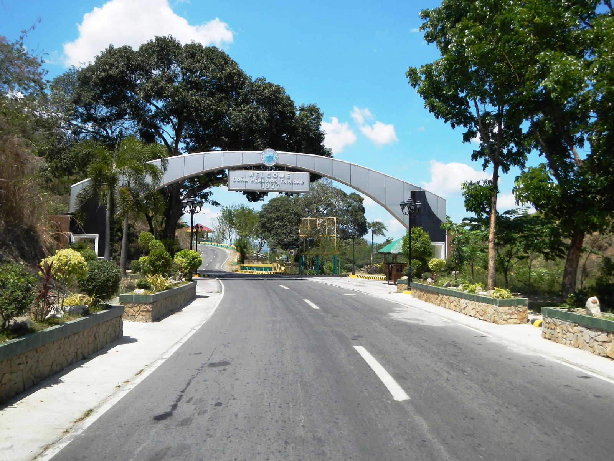
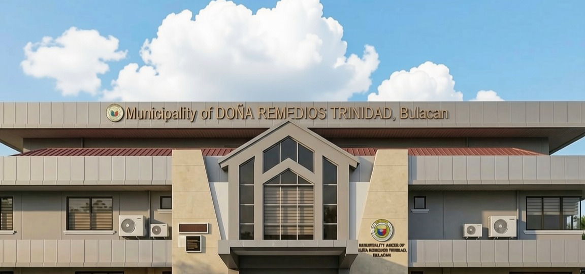

Bulacan's hidden paradise of nature & adventure
Discover the natural beauty, hidden destinations, and local attractions of Doña Remedios Trinidad. This tourism guide makes it easier to explore DRT, find destinations, and plan your next adventure.
DRT's 8 barangays each guard their own falls, caves, and viewpoints. Pick one to see what's there.
A full day, several stops, one loop from the town center — pick a circuit to see the route, what to bring, and where to sleep.
Tap any spot for its full details - location, fees, hours, activities, and how to get there.
Select a destination below to center the map on it and see its distance from the town center.
Doña Remedios Trinidad (DRT) was established as a municipality in 1977 through Presidential Decree No. 1196. It was formed from parts of Angat, Norzagaray, and San Miguel, Bulacan, and was named after Doña Remedios Trinidad.
Today, DRT is known as Bulacan’s largest municipality by land area, home to vast forests, mountains, rivers, and rural communities.

Gallery